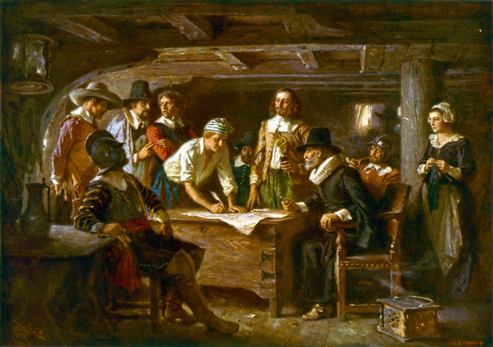
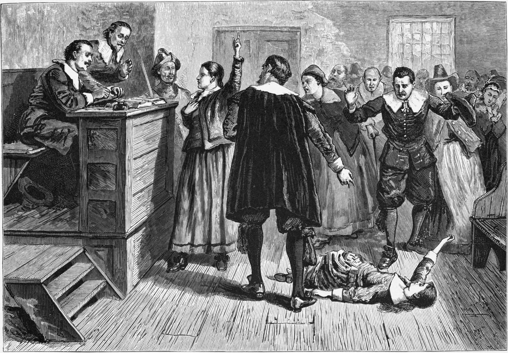

Directions: Work through the five stations in order. Each station holds one record from the lesson's colonies. For each station, state the rule of belonging the record sets, and who stands inside or outside it. At the end, judge whether New England's discipline was the price of its survival or a separate choice, and answer the strongest counterclaim from the documents.
Source: Pilgrim settlers, "Mayflower Compact," 1620 (Yale Avalon Project; from Francis Newton Thorpe, The Federal and State Constitutions, 1909), as carried in the audited Primary Source Project bank record. Quoted with cuts, marked by ellipses. Painting: Jean Leon Gerome Ferris, The Mayflower Compact, 1620, a later artist's imagining of the signing, printed by the Detroit Publishing Company; Library of Congress, public domain.

"Do by these Presents, solemnly and mutually, in the Presence of God and one another, covenant and combine ourselves together into a civil Body Politick, for our better Ordering and Preservation ... And by Virtue hereof do enact, constitute, and frame, such just and equal Laws, Ordinances, Acts, Constitutions, and Officers, from time to time, as shall be thought most meet and convenient for the general Good of the Colony; unto which we promise all due Submission and Obedience."
The signers call themselves the loyal subjects of King James. They have landed at Cape Cod, outside the territory their patent covered. Forty-one adult men sign. The women, children, and servants aboard do not.
State the rule of belonging this record sets. What makes a person a member of this government, and what does membership require of him?
State who stands inside the rule and who stands outside it. Name the groups the record itself lets you identify, and say what the outside groups' position was under the laws the inside group would make.
Source: John Winthrop, "A Modell of Christian Charitie," 1630 (VIVA Pressbooks, American Literature I; seventeenth-century spelling retained), as carried in the audited Primary Source Project bank record. Winthrop, the Massachusetts Bay Colony's governor, wrote this sermon-like address during the Atlantic crossing, before the colony existed. Quoted with cuts, marked by ellipses.
"God Almighty in his most holy and wise providence, hath soe disposed of the condition of mankind, as in all times some must be rich, some poore, some high and eminent in power and dignitie; others mean and in submission."
"For this end, wee must be knitt together, in this worke, as one man. Wee must entertaine each other in brotherly affection. Wee must be willing to abridge ourselves of our superfluities, for the supply of other's necessities."
"For wee must consider that wee shall be as a citty upon a hill. The eies of all people are uppon us. Soe that if wee shall deale falsely with our God in this worke wee have undertaken, and soe cause him to withdrawe his present help from us, wee shall be made a story and a by-word through the world."
State the rule of belonging this record sets. Rich and poor are both inside it: state what each owes the other, in Winthrop's own terms.
State who stands outside the rule, and what hangs over those inside it. Use the city upon a hill passage: who is watching, and what happens to the community if it fails the watch?
Source: Massachusetts Bay General Court, "Anne Hutchinson Trial Examination," 1637 (East Tennessee State University; from John Winthrop's Short Story, 1644), as carried in the audited Primary Source Project bank record. This is the court's own record of the trial, kept by the men prosecuting her. Hutchinson had held meetings in her Boston home and taught that salvation came by God's grace, not by works. Quoted with cuts, marked by ellipses.
Gov. Winthrop: "you are known to be a woman that hath had a great share in the promoting and divulging of those opinions that are the cause of this trouble ... and you have maintained a meeting and an assembly in your house that hath been condemned by the general assembly as a thing not tolerable nor comely in the sight of God nor fitting for your sex"
Mrs. Hutchinson: "I am called here to answer before you but I hear no things laid to my charge."
Gov.: "I have told you some already and more I can tell you."
Mrs. H.: "Name one, Sir."
Gov.: "Why for your doings, this you did harbor and countenance those that are parties in this faction that you have heard of."
Mrs. H.: "That's matter of conscience, Sir."
Gov.: "Your conscience you must keep, or it must be kept for you."
The court banished Hutchinson from the colony. She settled first in Rhode Island and was killed in New Netherland in 1643.
State the rule of belonging the court's charges set. Name every ground of objection to Hutchinson you can find in the governor's words, including the one about her sex.
State who stands inside and outside the rule at this station, and how Hutchinson herself contests the boundary. Use her two shortest answers, and the governor's answer about conscience.
Source: Freemen of the Connecticut River towns, "Fundamental Orders of Connecticut," 1639 (Yale Avalon Project; from Francis Newton Thorpe, The Federal and State Constitutions, 1909), as carried in the audited Primary Source Project bank record. The three towns had no charter from the king. Quoted with cuts, marked by ellipses.
"do therefore associate and conjoin ourselves to be as one Public State or Commonwealth; and do for ourselves and our successors ... enter into Combination and Confederation together, to maintain and preserve the liberty and purity of the Gospel of our Lord Jesus which we now profess ..."
Order 1 provides that the governor and magistrates be chosen "by all that are admitted freemen and have taken the Oath of Fidelity." Order 4 provides that "the Governor be always a member of some approved Congregation." Order 10 provides: "In which said General Courts shall consist the supreme power of the Commonwealth, and they only shall have power to make laws or repeal them, to grant levies, to admit of Freemen, dispose of lands undisposed of ..."
State the rule of belonging this record sets, and where it says the government's authority comes from. Name the two purposes the preamble joins in one sentence.
State who stands inside the rule and who stands outside it. Use Order 1, Order 4, and Order 10: who may vote, who may govern, who decides who else may become a freeman, and who therefore has no path inside at all?
Source: Essex County Court of Oyer and Terminer, "Records of the Trial and Execution of Sarah Good," 1692 (Salem Witch Trials Documentary Archive, via The American Revolution Primary Source Readings), as carried in the audited Primary Source Project bank record. These records were written by the court that condemned her. Illustration: "Witchcraft at Salem Village," an engraving of 1876, a later artist's imagining of a trial courtroom, not a picture made in 1692; public domain. Quoted with cuts, marked by ellipses.

The indictment charges Sarah Good, wife of William Good of Salem Village, with "certaine Detestable arts called Witchcrafts and Sorceries, Wickedly & felloniously" used against a neighbor, who by those arts "was and is Tortured Afflicted Pined Consumed wasted and Tormented."
Samuel and Mary Abbey, who had once taken the Goods into their house, testified: "these Deponents could not suffer her to Live in their howse any Longer; and was forced for Quitteness sake to turne she the said Sarah, with her husband, out of their howse ... we began to Loose Cattel, and Lost severall after an unusuall Manner ... your Deponents have Lost after that manner 17 head of Cattle within two years, besides Sheep, and Hoggs; and both doe believe they Dyed by witchcraft."
Good refused to confess. The court found her guilty, and the death warrant ordered her hanged on July 19, 1692, with four other convicted women.
State the rule of belonging this record reveals, working backward from the case against Good. What had her neighbors already decided about her before any charge was filed, and what did the charge then allow the court to do with that decision?
State who stands inside and outside the rule at this station, and weigh the evidence in the record itself. What does the Abbeys' testimony actually prove, in plain facts, and what does it only assert?
Five records stand in the file: a compact, a sermon, a trial examination, a frame of government, and a witchcraft record, spanning 1620 to 1692. Judge whether New England's discipline was the price of its survival or a separate choice. A strong verdict works through the records in time: it grants what survival genuinely required at Plymouth in 1620, and then tests whether the same explanation covers Newton in 1637, Connecticut in 1639, and Salem in 1692.
Answer the strongest counterclaim from the documents. If you judge the discipline a separate choice, answer the claim that a colony of families in a hard country, ringed by peoples it was dispossessing, could not have held together any other way. If you judge it the price of survival, answer Hutchinson's unanswered demand for a charge, and the cattle in the Abbeys' testimony. Name dates and documents. A verdict that praises toleration or condemns bigotry without working the records has not answered the question this file asks.
Write your verdict in a paragraph. State your judgment, support it from at least three stations in time order, and answer the strongest counterclaim in full.
Rule of belonging. Membership is made by covenant and consent. The signers combine themselves into a civil Body Politick, create its power to enact just and equal laws, officers, and constitutions for the general Good of the Colony, and in return promise all due submission and obedience. Belonging is an act a man performs by signing, and it binds him to obey what the body enacts.
Inside and outside. Inside stand the forty-one adult men who signed, Pilgrims and Strangers on the same terms, which is the record's genuine breadth. Outside stand the women, children, and servants aboard, who would live under the laws without having consented to them, and the Native peoples of the coast, who are not parties to the document at all. Students should also note the signers still call themselves loyal subjects of King James: consent operates inside loyalty to the Crown, not instead of it.
Rule of belonging. The community is one body under God, its ranks themselves ordained: some rich, some poor, some high, some in submission. Belonging runs by mutual obligation across the ranks. The rich hold their goods as stewards and must abridge themselves of their superfluities for the supply of others' necessities; all must entertain each other in brotherly affection, rejoice and suffer together, knit together as one man.
Outside, and the watch. Strictly, the sermon puts no English person outside; its outside is failure itself. The community stands under observation: the eyes of all people are upon it, and God watches with them. If the settlers deal falsely with God in the work, he will withdraw his help and they will be made a story and a byword through the world. The discipline of the later records is this passage enforced: a community that believes itself watched will watch itself, and will treat internal failure as public ruin.
Rule of belonging. The governor's charge sets the rule at three points: Hutchinson promoted and divulged opinions causing the colony's trouble, she kept a meeting in her house after the assembly condemned it, and the meeting itself was "not tolerable nor comely in the sight of God nor fitting for your sex." Belonging requires right doctrine as the ministers define it, obedience to the assembly's rulings about meetings, and, for a woman, silence in the role of teacher. Conscience is no defense: "Your conscience you must keep, or it must be kept for you."
Inside, outside, and her contest. Inside stand the ministers and magistrates who define the opinions that count as trouble; outside stands Hutchinson, banished. She contests the boundary procedurally and theologically at once: "I hear no things laid to my charge" and "Name one, Sir" demand the criminal standard of a specific charge, and "That's matter of conscience, Sir" claims a jurisdiction the court refuses to recognize. Students should note whose record this is: the court's own notes, in which her answers still read as the strongest lines in the room.
Rule of belonging, and the source of authority. The freemen associate and conjoin themselves as one public state or commonwealth, with no charter from the king: the authority rises from the associated freemen themselves, acting under God. The preamble joins two purposes in one breath, civil order among the towns and "the liberty and purity of the Gospel of our Lord Jesus which we now profess." The frame is a constitution and a church settlement in a single document.
Inside and outside. Inside stand the admitted freemen who have taken the Oath of Fidelity: they choose the governor and magistrates yearly (Order 1), the governor must be a member of an approved congregation (Order 4), and the General Court holds the supreme power, including the power "to admit of Freemen" (Order 10), so the inside group controls admission to itself. Outside stand everyone not admitted: women, servants, the unchurched, and Native peoples, none of whom has any path into the franchise that the document provides.
Rule of belonging revealed. The record shows the boundary enforced from below. The Abbeys had already judged Good unfit to live in their house, "so Turbuland a Spirritt, Spitefull and so Mallitiously bent," and turned her family out; the witchcraft charge then converted a neighborhood's settled dislike of a poor, homeless, quarrelsome beggar woman into a capital case. Belonging by 1692 required not only church standing but a reputation the neighbors would swear to, and its absence could be sworn into evidence of a capital crime.
Inside, outside, and the weight of the evidence. Inside stand the deponents and the court; outside stands Good, who refused to confess and was hanged on July 19, 1692. Weighed plainly, the Abbeys' testimony proves three facts: the Goods lived in their house, were turned out after quarrels, and seventeen head of cattle died over the following two years. It asserts one thing it cannot prove, that the cattle "Dyed by witchcraft," and the indictment's afflicted neighbor is presented in the same form, torment sworn as fact. The record proves what a community believed about Sarah Good. It cannot prove what Sarah Good did. Students who reach that sentence have done the station's work.
Full credit verdicts take a position, work at least three stations in time order, and answer the counterclaim from the documents. A separate choice verdict argues that survival explains Plymouth's winter discipline and the Modell's mutual labor, and then shows the explanation failing forward: Hutchinson was tried in 1637 in a fed, housed, governed town, on doctrine, and her demand for a charge was never met; Connecticut in 1639 was in no emergency when it wrote church membership into its frame; Salem in 1692 hanged a beggar woman on dead cattle and spectral claims seventy years after the landing. A price of survival verdict argues that covenant discipline was the colony's operating system from the Arbella forward, that Williams threatened the charter's land title in wartime's shadow, and that Salem's court acted inside a genuine belief system under war strain from the frontier; it must still answer Hutchinson's unanswered charge and the Abbeys' cattle, and verdicts that wave those away earn partial credit. Verdicts that condemn or celebrate without a mechanism earn partial credit.